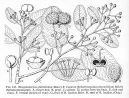

Sphaerosepalaceae
Sphaerosepalaceae is a small family of trees and shrubs belonging to the order Malvales. The family is entirely endemic to Madagascar. Its members are characterized by alternate, simple leaves with stipules, radially symmetrical flowers with distinct sepals and petals, numerous distinct stamens, and typically capsular or drupe-like fruits.
Overview
Sphaerosepalaceae is a small plant family comprising only two genera, Rhopalocarpus and Dialyceras, with a total of about 18-20 species. It holds a significant biogeographic distinction as being strictly endemic to the island of Madagascar, contributing to the unique flora of this biodiversity hotspot.
Phylogenetically, Sphaerosepalaceae belongs to the large and diverse order Malvales, which is part of the Malvid clade within the Rosids. This order includes well-known families such as Malvaceae (mallows, cotton, cacao), Thymelaeaceae (daphne), Cistaceae (rockroses), and Dipterocarpaceae. Within Malvales, Sphaerosepalaceae represents a distinct lineage whose exact relationships are still being refined, though often considered close to Thymelaeaceae or Dipterocarpaceae.
Members of the family are trees or shrubs found in various forest habitats across Madagascar. They are characterized by simple, alternate leaves usually bearing stipules, and flowers that typically have distinct sepals and petals, numerous free stamens, and a superior ovary composed of fused carpels. The presence of mucilage cells or canals is also common, a trait shared with many other Malvales families.
Quick Facts
- Scientific Name: Sphaerosepalaceae
- Common Name: (None widely accepted)
- Number of Genera: 2 (Rhopalocarpus, Dialyceras)
- Number of Species: Approximately 18-20
- Distribution: Endemic to Madagascar
- Evolutionary Group: Eudicots - Rosids - Malvids - Malvales
Key Characteristics
Growth Form and Habit
Members are evergreen or deciduous trees or shrubs. Tissues often contain mucilage cells or canals.
Leaves
Leaves are arranged alternately along the stems. They are simple, with margins typically entire (smooth), though sometimes slightly toothed. A key feature is the presence of stipules at the base of the petiole; these are often relatively large, sometimes fused or sheathing the bud, and may be persistent or deciduous (leaving scars).
Inflorescence
Flowers are borne in axillary or terminal inflorescences, typically structured as cymes or panicles, or flowers are sometimes solitary.
Flowers
Flowers are generally medium-sized to large, often showy, radially symmetrical (actinomorphic), and bisexual (perfect). Key floral features include:
- Calyx: Sepals usually number 3 or 4 (sometimes more), are distinct or fused only at the very base, often thick or leathery, and typically persist below the fruit. Bracteoles resembling an epicalyx may be present below the calyx.
- Corolla: Petals usually number 4 or 5 (sometimes up to 9), are distinct (free), often large and conspicuous, and typically white, yellow, or reddish.
- Androecium: Stamens are numerous (many, typically more than 15), with distinct filaments. They arise from the receptacle below the ovary. Anthers usually open via longitudinal slits.
- Gynoecium: The pistil consists of 2-5 (sometimes more) fused carpels (syncarpous). The ovary is positioned superiorly and is divided into as many chambers (locules) as there are carpels. Each locule contains one to numerous ovules attached to central placentas (axile placentation). A single style terminates in a capitate or lobed stigma. A nectar disc is often absent or poorly developed.
Fruits and Seeds
The fruit is typically a woody or leathery capsule that splits open septicidally (along the partitions). In some species, the fruit may be indehiscent and somewhat fleshy, resembling a berry or drupe. The persistent calyx often remains prominent at the base of the fruit. Seeds may sometimes be winged or possess an aril.
Chemical Characteristics
The presence of mucilage is characteristic. Cyclopropenoid fatty acids, common in many Malvales families, may also occur.
Field Identification
Identifying members of Sphaerosepalaceae requires recognizing them as trees or shrubs endemic to Madagascar with a specific combination of leaf and floral features:
Primary Identification Features
- Habit & Location: Identify as trees or shrubs found exclusively in Madagascar.
- Leaves: Look for alternate, simple leaves (usually entire margin) bearing stipules (check for stipules themselves or stipule scars at the petiole base).
- Flowers: Radially symmetrical, bisexual flowers with a distinct calyx and corolla. Note the typical numbers: 3-4 sepals and 4-5 (or more) distinct petals. A key feature is the presence of numerous (many, >15) distinct stamens.
- Ovary: Ovary is superior, composed of 2-5+ fused carpels.
- Fruit: Look for a woody or leathery capsule (sometimes berry/drupe-like), often subtended by the persistent calyx.
Secondary Identification Features
- Stipules: Often prominent or sheathing the bud.
- Stamens: Numerous and not fused into a tube (unlike Malvaceae).
- Petals: Often relatively large and showy.
- Mucilage: May be present in tissues (though hard to observe directly).
Seasonal Identification Tips
- Year-round: Tree/shrub habit and alternate, simple, stipulate leaves are constant features.
- Flowering/Fruiting: Occurs seasonally; flowers can be quite conspicuous. Woody capsules may persist on the tree.
Common Confusion Points (within Madagascar / Malvales)
- Malvaceae (Mallow family): Also Malvales, common in Madagascar, trees/shrubs with alternate simple stipulate leaves. Distinguished by typically having stamens fused into a distinctive staminal tube surrounding the style. Often have an epicalyx.
- Sarcolaenaceae: Another Malvales family endemic to Madagascar. Trees/shrubs with alternate simple stipulate leaves. Differ in having flowers/fruits typically associated with or enclosed by a prominent cupule or involucre derived from bracts, and often fewer stamens.
- Dipterocarpaceae: Related Malvales trees (though absent from Madagascar itself). Differ dramatically in fruit type (winged fruits derived from calyx lobes).
- Other Malagasy Tree Families: Requires careful checking of stipule presence, floral formula (especially the combination of 3-4 sepals, 4-5+ petals, numerous distinct stamens, superior syncarpous ovary), and fruit type.
Field Guide Quick Reference
Look For:
- Tree/shrub in Madagascar
- Leaves alternate, simple, stipulate
- Flowers radial, bisexual
- Calyx 3-4 sepals
- Corolla 4-5+ distinct petals
- Stamens numerous, distinct
- Ovary superior, syncarpous (2-5+ carpels)
- Fruit usually a capsule (woody/leathery)
Key Distinctions:
- Stamens distinct (vs. fused tube in Malvaceae)
- No involucre/cupule around flower/fruit (vs. Sarcolaenaceae)
- Stipules present (vs. absent in some other families)
- Combination of sepal/petal/stamen numbers
Notable Examples
The family comprises two genera endemic to Madagascar:

Rhopalocarpus spp. (e.g., R. lucidus)
(No common English name)
The larger genus in the family, containing several species of trees and shrubs found in various forest types in Madagascar. They typically have alternate, simple, often leathery leaves with prominent stipules. Flowers are often relatively showy with distinct petals and numerous stamens. The fruit is typically a woody capsule.

Dialyceras spp. (e.g., D. parvifolium)
(No common English name)
The smaller genus, containing only a few species of shrubs or small trees, also endemic to Madagascar. Shares the general family characteristics of alternate stipulate leaves and flowers with numerous stamens, but differs from Rhopalocarpus in certain details of floral structure (e.g., carpel number) and fruit morphology.
Phylogeny and Classification
Sphaerosepalaceae is classified within the order Malvales, a major group belonging to the Malvid clade within the Rosids. This large order includes well-known families such as Malvaceae (cotton, hibiscus, cacao), Cistaceae (rockroses), Thymelaeaceae (daphne), Bixaceae (annatto), and Dipterocarpaceae (important tropical timber trees).
Molecular phylogenetic studies place Sphaerosepalaceae firmly within Malvales. Its exact sister relationship is still being investigated, but it is often considered closely related to families like Thymelaeaceae or Dipterocarpaceae. Its endemic status to Madagascar suggests a long period of isolated evolution on the island, likely diverging after Madagascar separated from other landmasses. It represents one of several plant families endemic or near-endemic to Madagascar within the Malvales order (e.g., Sarcolaenaceae).
Position in Plant Phylogeny
- Kingdom: Plantae
- Clade: Angiosperms (Flowering plants)
- Clade: Eudicots
- Clade: Rosids
- Clade: Malvids
- Order: Malvales
- Family: Sphaerosepalaceae
Evolutionary Significance
The Sphaerosepalaceae family is significant for:
- Madagascar Endemism: Contributes to the unique and highly endemic flora of Madagascar, providing insights into island biogeography and evolution.
- Malvales Phylogeny: Its position within Malvales helps refine our understanding of the relationships and evolutionary history of this large and diverse order.
- Morphological Traits: Retains features like numerous distinct stamens, potentially reflecting ancestral states within certain Malvalean lineages, contrasting with the highly derived fused staminal tube of Malvaceae.